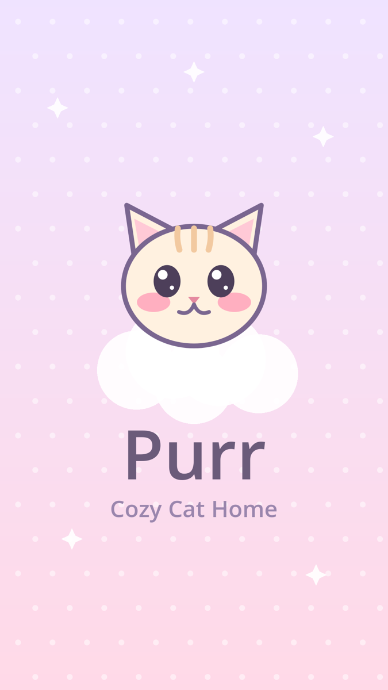
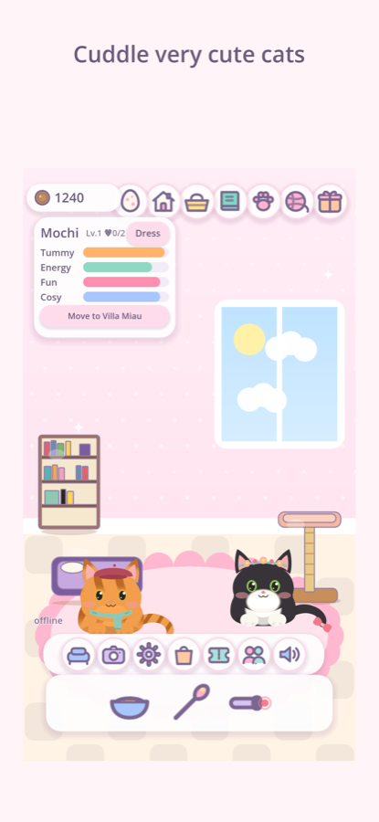
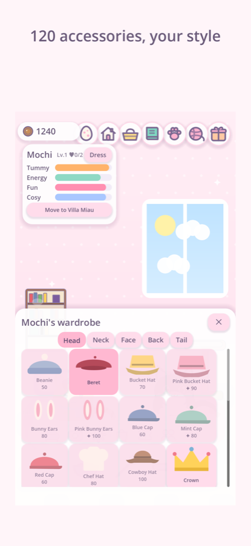
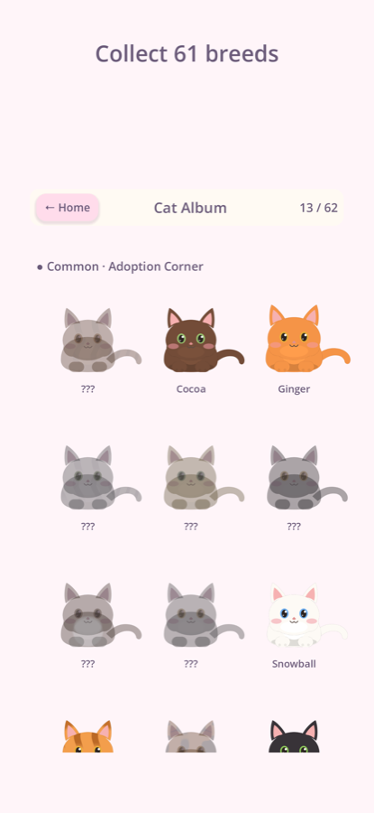
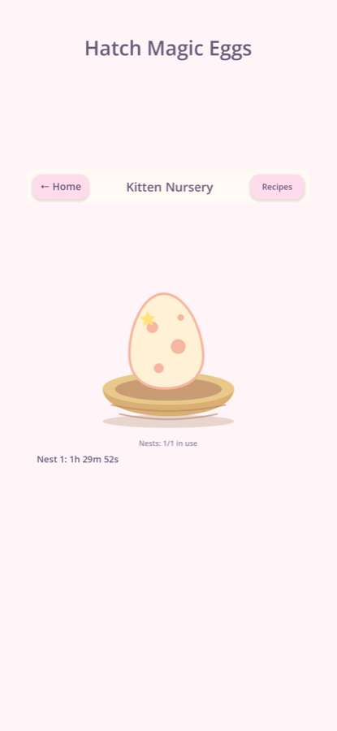
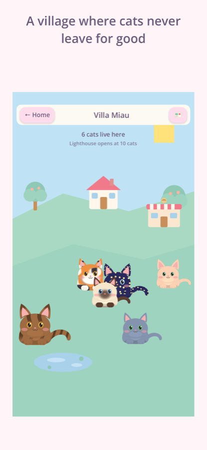
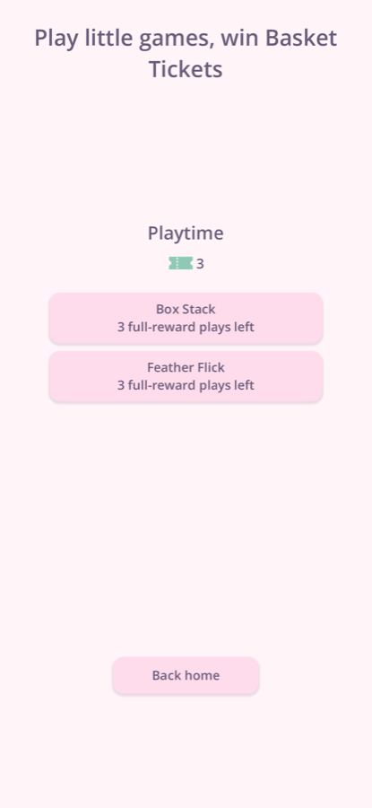

Adopta, mima y colecciona gatos
Purr es un hogar cálido para gatos muy monos. Dales de comer, juega con el plumero, vístelos y mira crecer a tu familia. Aquí nunca pasa nada malo.







Cuidar sienta bien
Dar de comer, acariciar y jugar. Los gatos ronronean cuando aciertas el sitio, duermen al sol y siempre se alegran de verte.
61 razas para coleccionar
Adopta gatos comunes con galletas, haz nacer nuevos de huevos mágicos y abre la Cesta misteriosa con tickets que ganas jugando.
Haz tu hogar
Siete huecos de decoración, muebles, papeles de pared y 120 accesorios, de boinas a alas de dragón. Haz fotos para compartir.
Villa Miau
Cuando la casa está llena, los gatos se mudan a un pueblo soleado en la colina. Envían postales y cualquiera puede volver a casa.
Jugad juntos
Añade amigos con un código, visita sus casas y haced nacer un huevo de cita de juego en el que los dos recibís un gatito. Sin chat, sin desconocidos.
Pensado para familias
Una pantalla de edad neutra, un modo infantil sin anuncios ni compras, una puerta para adultos y un límite de gasto mensual.
Para los adultos
- Gratis. Las compras opcionales tienen precio fijo, se muestran completas y nunca son aleatorias. Un adulto fija el límite mensual.
- Los niños juegan sin anuncios, sin datos personales y sin texto libre. Los amigos se añaden con códigos y los nombres salen de una lista cuidada.
- Los recordatorios son suaves, como mucho uno al día, nunca de noche, y nunca dicen que un gato está triste o tiene hambre.
- Todo está explicado en nuestra política de privacidad. Dudas: ayuda.